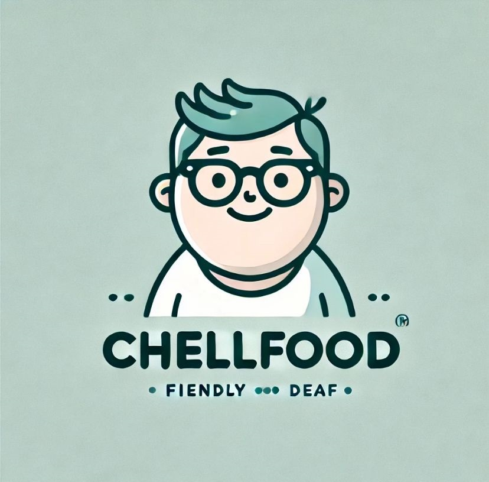

Warung ChellFood Website Makanan Ramah Tunarungu
Selamat datang di Warung ChellFood! Website ini mendukung tunarungu dengan menu visual dan bahasa isyarat!
Pilih menu di bawah untuk melanjutkan:
Menu Makanan
Cara Memesan khusus tunarungu
Cara Berkomunikasi bahasa isyarat